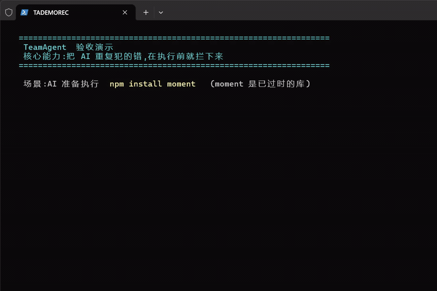
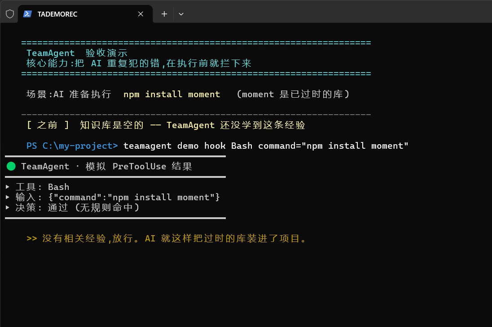
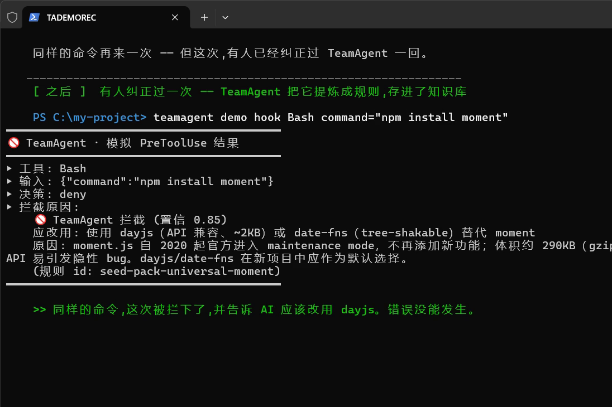

同一条命令、同一个工具,在「TeamAgent 没学到经验」和「学到经验」两种状态下,给出了相反的结果 —— 该放的放行,该拦的拦住。前后对比成立。
团队里的人用 AI 写代码,难免会犯一些「早就有人踩过的坑」。TeamAgent 做的事很简单:把团队踩过的坑记下来,等 AI 下次又要踩同一个坑时,在它真正动手之前把它拦住。
本次验收用一个具体的坑来演示:AI 想安装 moment 这个已经过时的日期库。我们对比 TeamAgent 在「还没学到这条经验」和「已经学到」两种状态下的反应。


TeamAgent 还没学到「别用 moment」这条经验。AI 执行 npm install moment —— 放行。过时的库就这样被装进了项目,没人拦。

这条经验已经进了知识库。同样的命令再跑一次 —— 被拦下,并且告诉 AI:应该改用 dayjs。错误没能发生。
| ✅ | 同一个输入,只改变一个变量,结果相反 两次跑的命令完全一样(npm install moment),工具一样(Bash)。唯一的差别是:知识库里有没有那条学到的经验。结果:空知识库 → 放行;有经验 → 拦截。一个变量,两个相反的结果 —— 说明拦截确实是这条经验起的作用,不是碰巧。 |
| ✅ | 拦截给出的理由是具体的、可核验的 不是笼统地「拒绝」,而是明确指出:置信度 0.85、应改用 dayjs 或 date-fns、原因是 moment 已进入维护模式且体积过大、并附上规则编号 seed-pack-universal-moment。 |
| ▫️ | 全量测试通过 + 合并无冲突 —— 这是工作流里的第 2 条标准,由 CI 把关,不在本份「功能验收报告」的范围内。本报告只回答「这个功能到底做出来没有」。 |
下面是两次运行逐字未改的真实输出。任何人都可以照"怎么复现"一节自己跑一遍,得到一样的结果。
━━━━━━━━━━━━━━━━━━━━━━━━━━━━━━━━━━━━━━━━━
🟢 TeamAgent · 模拟 PreToolUse 结果
━━━━━━━━━━━━━━━━━━━━━━━━━━━━━━━━━━━━━━━━━
▸ 工具: Bash
▸ 输入: {"command":"npm install moment"}
▸ 决策: 通过 (无规则命中)
━━━━━━━━━━━━━━━━━━━━━━━━━━━━━━━━━━━━━━━━━
━━━━━━━━━━━━━━━━━━━━━━━━━━━━━━━━━━━━━━━━━
🚫 TeamAgent · 模拟 PreToolUse 结果
━━━━━━━━━━━━━━━━━━━━━━━━━━━━━━━━━━━━━━━━━
▸ 工具: Bash
▸ 输入: {"command":"npm install moment"}
▸ 决策: deny
▸ 拦截原因:
🚫 TeamAgent 拦截 (置信 0.85)
应改用: 使用 dayjs(API 兼容、~2KB)或 date-fns(tree-shakable)替代 moment
原因: moment.js 自 2020 起官方进入 maintenance mode,不再添加新功能;体积约 290KB(gzipped 71KB),mutable API 易引发隐性 bug。dayjs/date-fns 在新项目中应作为默认选择。
(规则 id: seed-pack-universal-moment)
━━━━━━━━━━━━━━━━━━━━━━━━━━━━━━━━━━━━━━━━━